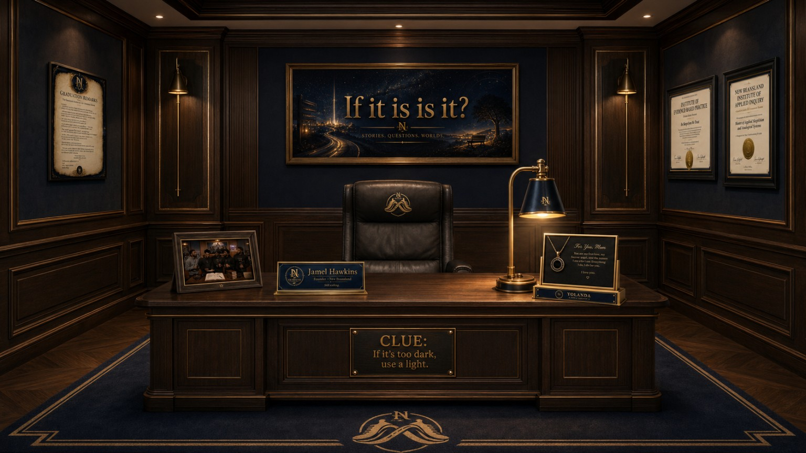

New Beansland · Founder’s Room
Founder’s Office
The people, memories, documents and ideas behind New Beansland. Choose an item below to read its story. No game or puzzle is required.

Explore the Office
Select any item to open its picture and read more. Everything is available without unlocking anything.
 FounderJamel HawkinsStill walking. Still building.
FounderJamel HawkinsStill walking. Still building.
New Beansland was built by Founder — the mind behind the stories, questions, worlds, and experiments that live here.
This space connects books, ideas, philosophy, imagination, memory, and lived experience into one universe. It is not just a website. It is a room full of paths.
Some lead to stories. Some lead to questions. Some lead to worlds. All of them lead back to intention.
Contact the Founder
foundernewbeansland@gmail.com
Official X, YouTube, and additional New Beansland links can be added here as they are connected.
Builder of New Beansland. Keeper of the walk.
 About New BeanslandIf it is is it?Stories. Questions. Worlds.
About New BeanslandIf it is is it?Stories. Questions. Worlds.
New Beansland is a creative home built for people who do not just look — they notice.
It is a place where storytelling, philosophy, imagination, memory, and meaning can live together. The books are not isolated projects. They are connected rooms in a larger universe.
- Stories for the worlds we enter.
- Questions for the things we cannot ignore.
- Worlds for the spaces beyond the page.
- Voices for the people, ideas, and presence inside it all.
New Beansland was built by Founder as a living creative structure — a place where the books connect, the ideas continue, and the walk keeps going.
This is not just a page. It is a world under construction.
 Framed RecordGraduation RemarksA speech about the work behind the walk.
Framed RecordGraduation RemarksA speech about the work behind the walk.
This frame preserves the Founder’s Graduation Remarks as part of the office’s official history.
The message is not that the work is finished. The message is that learning how to question, inspect, imagine, and build created a responsibility to keep going.
The degree marks an achievement. The remarks explain what the achievement is for.
The ceremony ended. The walk did not.
 Founder Academic RecordDoctor of Narrative ArchitectureNew Beansland Institute of Evidence-Based Practice
Founder Academic RecordDoctor of Narrative ArchitectureNew Beansland Institute of Evidence-Based Practice
This degree represents advanced study in perception, narrative systems, worldbuilding, civic imagination, and narrative architecture.
Areas of distinction
- Story structure and universe design
- Philosophical inquiry
- Ethical imagination
- Symbolic and narrative systems
- Connecting thought to lived experience
It recognizes the ability to take an idea apart, understand its structure, and build a world strong enough to hold it.
In imagination he built.
 Founder Academic RecordMaster of Applied SkepticismAnalogical Systems · Inquiry · Evidence
Founder Academic RecordMaster of Applied SkepticismAnalogical Systems · Inquiry · Evidence
This degree supports the first. It represents training in applied skepticism, analogical reasoning, inquiry, evidence, and recognizing when an idea or comparison does not fit.
Core disciplines
- Category recognition
- Evidence inspection
- Analogical reasoning
- Question-based inquiry
- Knowing what room you are in
Together, the degrees tell the story: first learn how to identify broken reasoning, then learn how to build better systems, stories, and worlds.
In skepticism he trusted. In understanding he built.
 Family KeepsakeFor You, MomYolanda · The one-room light
Family KeepsakeFor You, MomYolanda · The one-room light
You are my first love, my forever angel, and the reason I am who I am. Everything I do, I do for you.
The keepsake honors the line:
“Mama, you were magic in a one-room light.”
This keepsake explains where the Founder came from. The lamp pictured in the office ties the room back to Yolanda.
I love you.
 New Beansland FamilyWho Walks With MeThe family was not assembled. It accumulated.
New Beansland FamilyWho Walks With MeThe family was not assembled. It accumulated.
The framed photograph represents the New Beansland family — not a collection of interchangeable characters, but a family in which every member has a distinct origin, voice, personality, role, and place.
Some arrived early. Some arrived later. Some were expected. Some became part of the environment before anyone realized the room had changed.
The photograph grounds the office in the truth that the worlds were not built alone.
Different paths. One family.
 Still WalkingThe Chair Is EmptyThe Founder is not absent.
Still WalkingThe Chair Is EmptyThe Founder is not absent.
The empty chair represents presence and purpose.
The Founder is still walking, still building, and still moving through New Beansland. The chair does not mark disappearance. It marks work that continues beyond the room.
Still building. Still thinking. Still walking.
 Founder’s OfficeThe DeskWhere the work continues
Founder’s OfficeThe DeskWhere the work continues
The Founder’s desk is a working place, not a display case. This is where New Beansland’s ideas, books, stories, and questions keep becoming something real.
Work lives here.
 Family & MemoryThe One-Room LightA story behind the lamp
Family & MemoryThe One-Room LightA story behind the lamp
The lamp in the Founder’s Office represents the memory of Yolanda and the words, “Mama, you were magic in a one-room light.”
There is nothing to unlock. This is simply one of the stories that gives the room its meaning.
One room. One light.